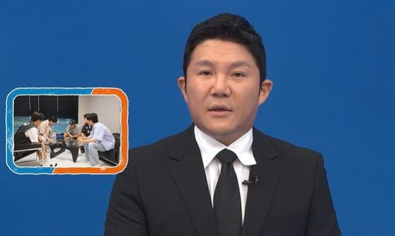

“이럴거면 하차하라”…‘1박2일’ 합류 2회만에 촬영 불참 조세호, 왜?

합류 2회 만에 녹화를 불참한 조세호에 대해 ‘1박2일’ 멤버들이 불만을 표출했다.
합류 2회 만에 녹화를 불참한 조세호에 대해 ‘1박2일’ 멤버들이 불만을 표출했다. 지난 1일 KBS 2TV 예능 프로그램 ‘1박2일 시즌4’에서 조세호의 불참에 멤버들이 불편한 기색을 드러냈다.
촬영 당일 아침 일찍부터 모인 제작진과 김종민, 문세윤, 딘딘, 유선호는 ‘1박2일’의 새 멤버 필수코스인 ‘기습 가정 방문’을 위해 이준의 집을 찾았다.
집합 시간을 혼자 다르게 알고 있는 이준의 집을 ‘1박2일’팀이 급습하자 이준은 혼비백산한다.
자신의 집에 우르르 모인 멤버들의 영문도 모를 행동에 이준은 “‘1박2일’ 원래 이런 프로그램 아니잖아”라고 황당해 했다.
그러던 중 멤버들은 새 멤버 조세호가 촬영 현장에 나타나지 않은 것에 대해 궁금해 했다.
이에 제작진은 “조세호씨는 저희와 함께 갈 수 없습니다”라며 “조세호씨가 멤버들한테 직접 해명을 하고 싶다며 영상 메시지를 남겼다”고 공개했다.
영상 속에서 조세호는 “양해의 말씀을 구하고자 한다”며 “‘1박2일’ 고정 멤버로 합류하기 6개월 전부터 원래 잡혀있던 일정이 있었다. 메인 PD가 ‘걱정하지 말고 합류하라’고 해서 합류했는데, PD가 ‘세호 씨 없이 촬영을 하기로 했다더라. 저도 다소 당황스러럽 미안하다. 제가 지금 현재 외국에 있다. 출장 잘 다녀와서 재밌는 웃음 드리겠다”고 사과를 전했다.
이 영상을 본 멤버들은 “이럴거면 하차하라” “신혼여행 미리 간 것 아니냐” “놀라 간 건가” 등 불만을 내비쳤다.
딘딘은 “그 형 다다음주에 오지 말라 그래라. 진짜 각오하고 아라고 그래라”고 못마땅해 했다.